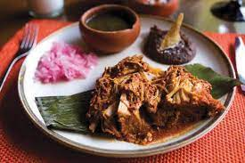
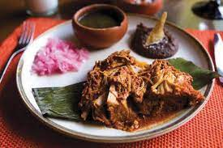
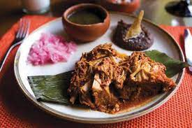

.jpg)
.jpg) 
Gastronomía de Yucatán
Por gastronomía de Yucatán se entiende específicamente la tradición culinaria del Estado de Yucatán, en México, aunque en un sentido amplio sus técnicas e ingredientes pertenecen en su conjunto a la gastronomia.
Bebidas:
pox, licor de henequén, xtabentún, balché, horchata de coco.
Ingredientes: maíz, frijol, chile habanero de Yucatán, chile xcatik, recado rojo, jitomate, chaya.
Platos:
cochinita pibil, sopa de lima, poc chuc, mukbil pollo, queso relleno, etc
Sistema culinario: mesoamericano
Territorio: Península de Yucatán (Yucatán, Quintana Roo y Campeche), México.
Algunos platillos típicos yucatecos son:
Puchero Relleno blanco
El Papak-tsul
Escabeche negro de Valladolid Salpimentado
Cochinita pibil
Tamales de pollo o de gallina Relleno negro
Salbutes
Pescado en Tikin-Xic
Sopa de lima Poc chuc
Mucbipollo
Pib
Panuchos
Huevos motuleños
Algunos dulces típicos yucatecos son:
El mazapán de almendras
Las bolas de huevo
Los zapotitos
El alfeñique
Las bizcotelas y roscas nevadas
Los dulces de anís
El dulce de coco seco
El dulce seco de pepita y el de cacahuate
La pasta de guayaba y la de guanábana
Dulces de almíbar
